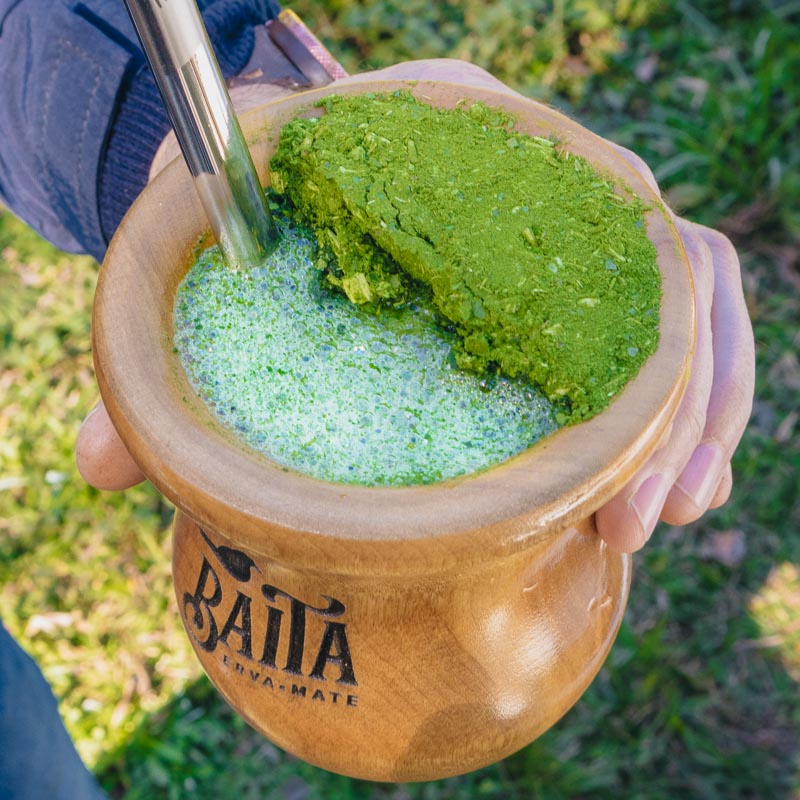
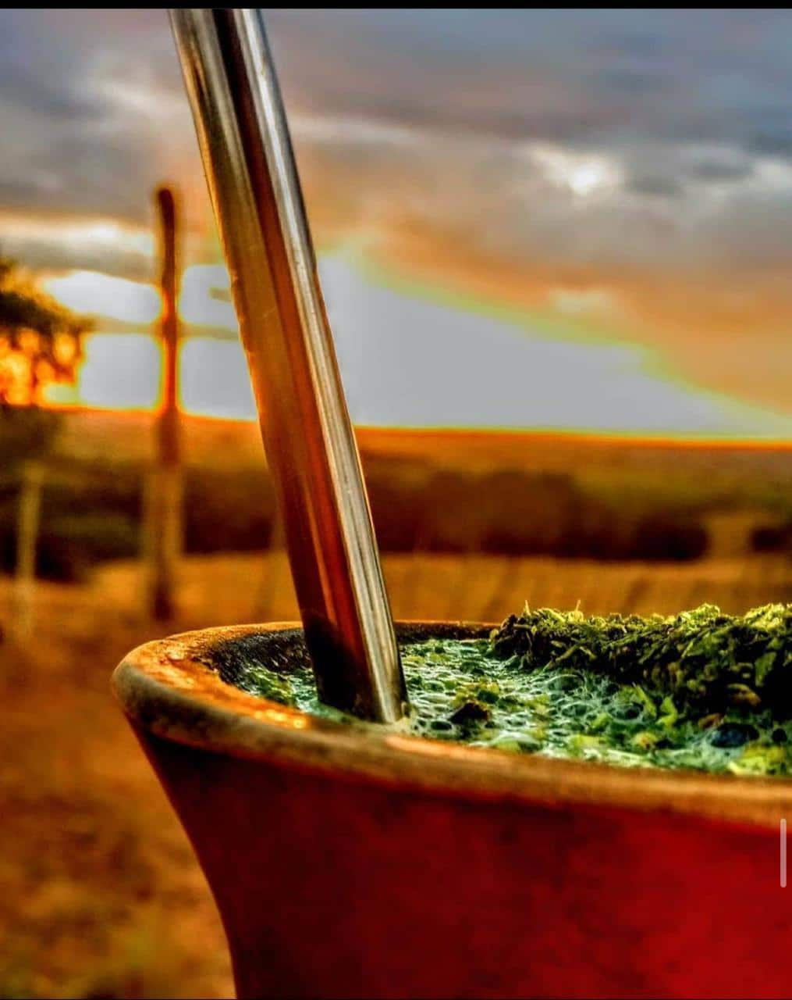
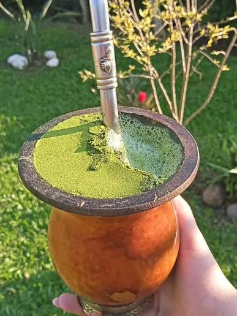
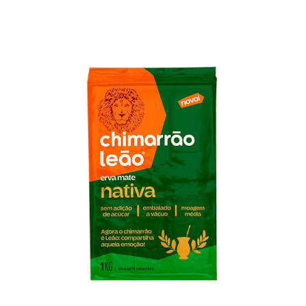

O CHIMARRÃO COMO CULTURA NO PARANÁ
O chimarrão é um dos maiores símbolos de hospitalidade e tradição no Paraná, especialmente nas regiões centro-sul e oeste do estado. Herança direta dos povos indígenas Guarani e Kaingang, o ato de 'matear' aproxima famílias e amigos em rodas de conversa calorosas. A bebida é feita com erva-mate moída servida em uma cuia com água quente e bombilha. Mais do que uma simples infusão, compartilhar o mate fortalece laços sociais e preserva o orgulho da identidade cultural paranaense.

Como começou o uso da erva-mate?
O consumo do chimarrão começou com os povos indígenas Guarani e Kaingang, muito antes da chegada dos colonizadores europeus à América do Sul. Eles utilizavam as folhas da erva-mate (Ilex paraguariensis) para fazer infusões, considerando a bebida uma fonte de energia e saúde. Com a chegada dos espanhóis e portugueses na região do Paraná e Bacia do Prata, o hábito foi absorvido e difundido pelos tropeiros e jesuítas. O uso da cuia e da bomba evoluiu com o tempo, tornando o ato de matear uma tradição social viva até hoje no estado.
A importância do chimarrão como cultura no Paraná
O chimarrão é importante no Paraná por ser um pilar de identidade cultural e coesão social, unindo gerações em torno do mesmo ritual. A roda de mate promove a convivência, o diálogo e a hospitalidade, funcionando como um momento de pausa e reconexão diária. Além do valor afetivo e comunitário, a tradição impulsiona a economia estadual por meio do cultivo e processamento da erva-mate. Por fim, a bebida preserva a história e os saberes ancestrais dos povos indígenas e tropeiros, mantendo viva a memória regional.
O Ciclo da Erva-Mate
O ciclo do chimarrão começa no cultivo da erva-mate, nativa da Floresta de Araucárias no Paraná. Após a colheita, as folhas passam pelo sapececo e secagem para eliminar a umidade e fixar a cor verde. Em seguida, a erva é cancheada, moída e embalada para distribuição ao consumidor. No preparo, acomoda-se a erva na cuia, adiciona-se água morna e insere-se a bomba. A bebida é então servida com água quente e renovada em várias rodadas. Por fim, os resíduos orgânicos voltam à terra como adubo, fechando o ciclo sustentável da tradição.
A cultura e a exploração da erva-mate impulsionaram o crescimento urbano no Paraná das seguintes formas:
Surgimento de povoados: Pontos de descanso das tropas de mateiros e tropeiros deram origem a diversas cidades paranaenses. Abertura de rotas: Caminhos abertos para o transporte da erva conectaram o interior ao litoral e à capital, Curitiba. Construção de infraestrutura: O lucro do comércio financiou as primeiras ferrovias, estradas e instalações portuárias (como o Porto de Paranaguá). Atração de imigrantes: A demanda nas áreas de cultivo e processamento atraiu italianos, poloneses, ucranianos e alemães, expandindo os centros urbanos. Desenvolvimento industrial: Engenhos de beneficiamento da erva dinamizaram o comércio, o crédito e a modernização das cidades.
A importância cultural do chimarrão
A consolidação da erva-mate como cultura no Paraná se deve à sua profunda raiz histórica e importância socioeconômica. Inicialmente herança dos povos indígenas Guarani e Kaingang, a bebida foi adotada pelos tropeiros, que a transformaram no principal combustível de suas longas viagens pelo interior do estado. A abundante presença da Ilex paraguariensis na Floresta de Araucárias facilitou sua extração e tornou o consumo diário e acessível a toda a população. O ciclo econômico do mate impulsionou a infraestrutura e a urbanização do Paraná, elevando o produto a símbolo de riqueza regional. Imigrantes europeus que chegaram ao longo dos séculos XIX e XX rapidamente assimilaram o hábito de matear como forma de integração local. Com o tempo, o ritual ultrapassou a função alimentar e virou um código social de hospitalidade, acolhimento e identidade paranaense. Hoje, tomar chimarrão é um ato contínuo de celebração das origens e da convivência familiar e comunitária.
memoria e patrimonio
imagens de memoria do chimarrão no Paraná



Curiosidades
Curiosidade 1
O "Ouro Verde" paranaense: Durante o século XIX e início do XX, a erva-mate era chamada de "ouro verde" devido à enorme riqueza gerada pelo seu ciclo econômico, que chegou a responder por mais de 80% da economia do estado.
Curiosidade 2
Barões do Mate: O sucesso do comércio da erva criou uma elite financeira no Paraná. Os chamados "Barões do Mate" foram responsáveis por financiar obras imponentes na capital, como casarões históricos e teatros.
Curiosidade 3
Capital da Erva-Mate: A cidade de Cruz Machado, no sul do Paraná, carrega o título de Capital Nacional da Erva-Mate, sendo uma das maiores produtoras da planta no país.
Curiosidade 4
Preservação da Araucária: Como a erva-mate nativa cresce melhor à sombra, o seu cultivo tradicional ajudou historicamente a preservar a Floresta de Araucárias, ecossistema símbolo do Paraná. Regras da roda de mate: Existe uma etiqueta tradicional para a roda de chimarrão: o "servidor" (quem prepara) sempre toma o primeiro mate para testar a temperatura e o fluxo da bomba antes de passar a cuia adiante. Apenas "Obrigado": Na roda de chimarrão, você só deve dizer "obrigado" quando não quiser mais beber. Se disser "obrigado" ao devolver a cuia, o servidor entenderá que você está se despedindo da rodada. Sem mexer na bomba: Uma das maiores gafes do chimarrão é mexer na bomba enquanto bebe. Isso pode entupir o filtro e é visto como uma desrespeito ao preparo feito pelo servidor.